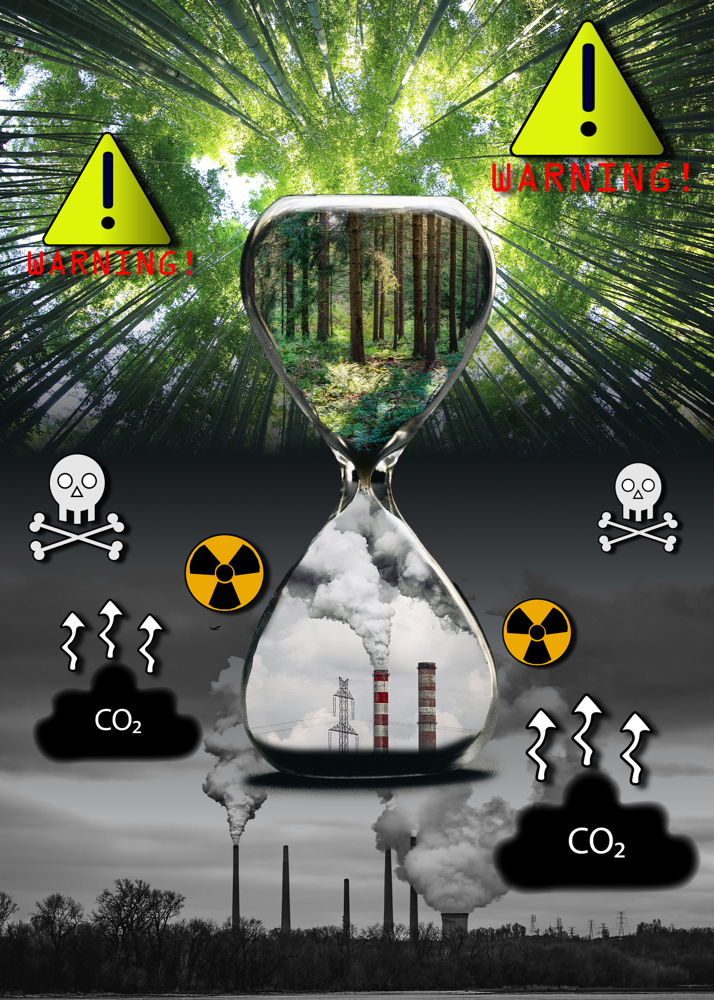

Building upon the Homework 3 photomontage, this design incorporates custom vector graphics—including yellow warning triangles with red "WARNING!" typography, skull-and-crossbones hazard icons, radiation symbols, and rising CO2 emission clouds—to reinforce the urgency of industrial pollution and environmental loss.